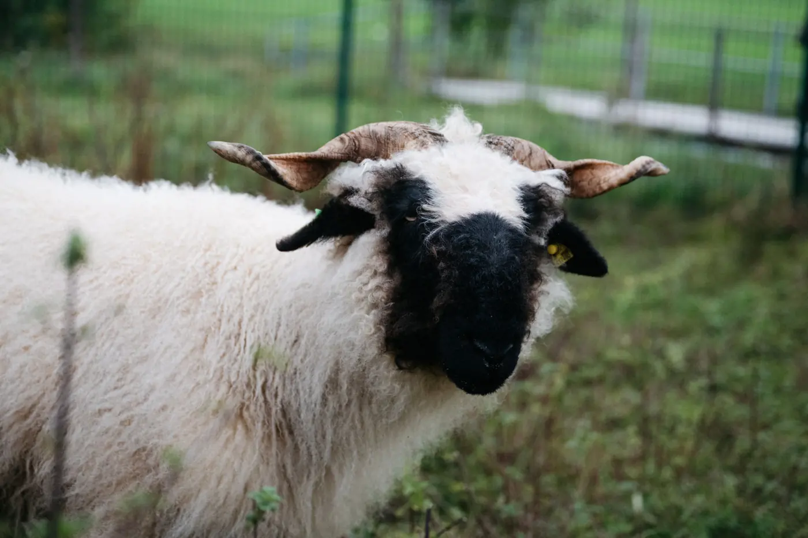

Donkeys
Emma & Marie
Hello, we are Emma and Marie! We two are inseparable and love a scratch behind the ears.
Did you know? Donkeys remember faces for years. Maybe we will recognise you on your next holiday!
Almromantik › Our animals
Our animals
Donkeys, ponies, cows, sheep, a dog, a cat and ducks: get to know our animals before your holiday!

Our animals introduce themselves here. Read with your mum or dad who is who, then go and find them on the farm. There is a little search game waiting for you at the bottom!
Donkeys
Hello, we are Emma and Marie! We two are inseparable and love a scratch behind the ears.
Did you know? Donkeys remember faces for years. Maybe we will recognise you on your next holiday!

Horse
I am Bella. Can you spot me by the white streak in my mane?
Did you know? Horses can sleep standing up.

Miniature Shetland ponies
We are Maggy and Little Thunder (Kleiner Donner): small, fluffy and curious. Little Thunder loves romping around with Sky the farm dog!
Did you know? Shetland ponies come from islands far in the north of Scotland.

Farm dog
Woof! I am Sky and I look after the whole farm. My best playmate is Little Thunder.
Did you know? Dogs can smell many thousand times better than we humans.

Pinzgauer cows
Moo! We are the big Pinzgauer cows. Our calves stay with us until they are grown up.
Did you know? In summer we walk up to the alpine pasture, right near our mountain hut.

Valais Blacknose sheep
Baa! With our black noses and thick wool we look like cuddly toys.
Did you know? Our sheep breed comes from the mountains of Valais in Switzerland.
Farm cat
Meow, I am Freddy, black and white like a football. I like it cosy and quiet.
Did you know? Cats sleep up to 16 hours a day.

Runner ducks
Quack! We do not fly, we waddle – and we stand up really straight.
Did you know? Runner ducks cannot fly, but they run really fast.

In summer our animals are out on the pasture, and the cows even go up to the alpine pasture, where they are neighbours of our mountain hut.

In winter the animals live in the warm stable and are fed every day. Children and adults are welcome to come along into the stable – just ask Heike or Martin.
Tick off every animal you have seen on the farm.
🎉 Great, you found them all! Tell Heike or Martin.
See available dates, calculate the price and book instantly.